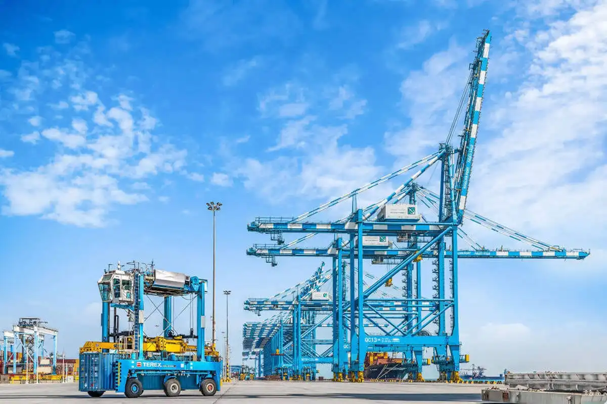
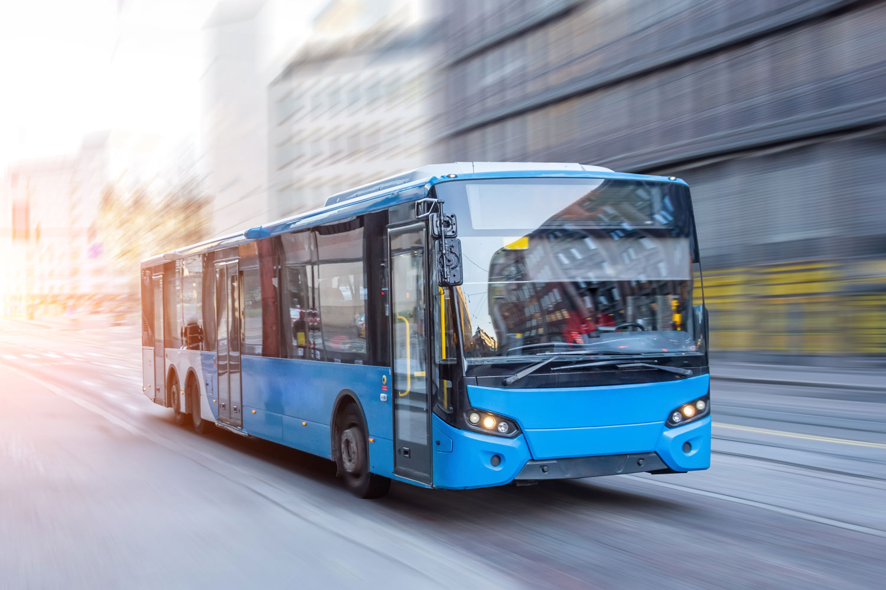
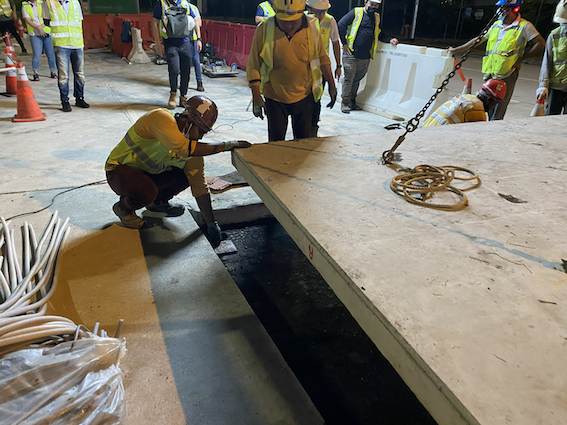
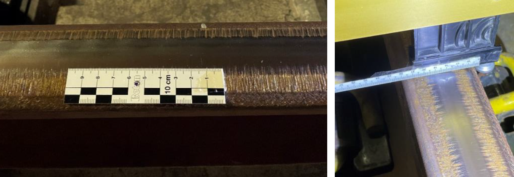
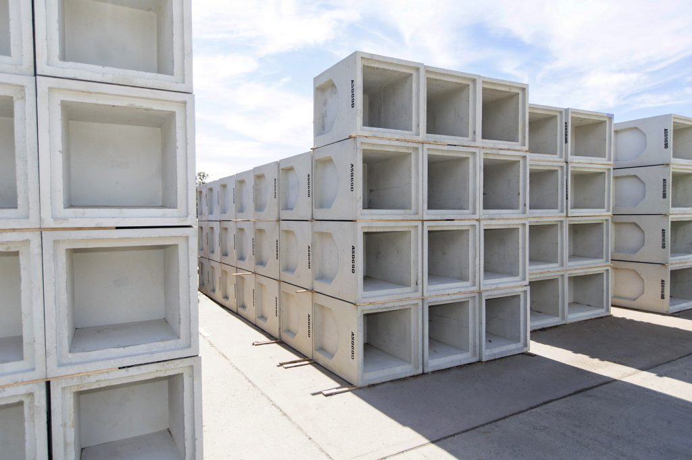

Consulting Portfolio (selected)
Advisory services for governments, development banks, and industry partners.
Freight Master Plan of Abu Dhabi Transport and Logistic Sector
Comprehensive update of Abu Dhabi's freight master plan with Dornier Consulting. Work encompasses thorough review and analysis of client-provided documents, detailed benchmark and best practice analyses evaluating comparable national freight systems, and professional report writing translating complex findings into actionable documents supporting the master plan's strategic recommendations.

Adoption of Electric Vehicles & E-Buses — Support for Infrastructure Investments (S4I)
Full-cycle e-bus project development framework for PT SMI / Indonesia with KFW and Dornier Consulting. Encompasses development phases, technical and financial components, and critical interrelations among all stakeholders. Training extended beyond DELST to include public and private finance experts, with hands-on technical assistance from procurement preparation to implementation monitoring.

Thin & Modular Precast System for Quick Pavement Rehabilitation
Designed and delivered a modular precast ECC slab system (3.4×2.4×0.12m) at a heavily trafficked Tampines intersection with LTA and JTC Corporation. ECC mixed with GGBS provides a ductile, fiber-reinforced surface that flexes under load without brittle cracking. Road reopened to traffic within two days — lower lifecycle cost and significantly extended service life versus conventional pavement.

Study Investigation of Railway-Noise
Investigated high noise emission and rail corrugation along several MRT lines in Singapore for the Land Transport Authority. Methodology included comparative study of train operations, track quality, and reference lines. Identified parameters contributing to high noise levels and proposed targeted improvements: rail roughness correction, gauge adjustment, friction modification, rail and wheel damping, and fastening system upgrades.

Design and Construction of Cast-In Situ Engineered Cementitious Composite Pavement
Designed and supervised construction of a continuous, jointless 130mm ECC slab for a JTC industrial road exhibiting long-term structural cracks and plastic deformation. Ultra-ductile ECC mixed with GGBS was cast as a monolithic slab, requiring a 7-day curing period before opening to traffic. Delivers a long-lasting, low-maintenance surface engineered for heavy-vehicle industrial environments.

Ready-Mix & Precast Concrete Market Research Study
Collaborated with PricewaterhouseCoopers on a comprehensive commercial strategy for the ready-mix and precast concrete markets. Work included TAM/SAM/SOM market sizing, customer research to understand decision-making and buying factors, detailed price analysis for a selected product type, and a forward-looking product development roadmap identifying high-opportunity precast products based on market demand.
